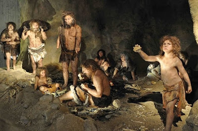
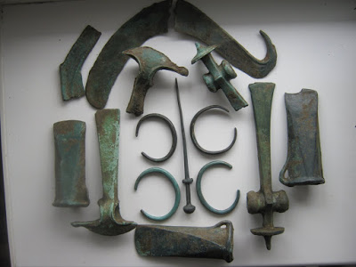
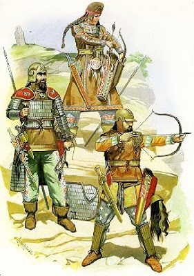

Бронзова доба
Бро́нзова доба — культурно-історичний період історії людства, який прийшов на змініні мідній добі — перехідному періоду після кам'яної доби . Характеризується виготовленням і використанням бронзових знарядь праці та зброї із бронзи, появою кочового скотарства, поливного рільництва, писемності, рабовласницьких держав (кінець ІІІ — початок I тисячоліття до н. е.) . Бронзова доба змінилася залізною добою у I тисячолітті до н. е. Загалом хронологічні рамки бронзової доби такі: 35/33 - 13/11 ст. до н.е., однак у різних культур вони різняться.
Схему тріади віків (камінь, мідь, залізо) запропонував і теоретично обґрунтував 1836 року датський археолог, хранитель колекцій Копенгагенського археологічного музею Х. Томсен
Етимологія терміну
Термін бронзова доба вперше зустрічається у книзі «Роботи і дні» Гесіода, яку прийнято називати «Доби людства», де історія людства поділена на 5 періодів: золоту, срібну, бронзову, доба героїв та залізну добу.
З розвитком археології у самостійну науку, данський археолог Християн Юргенсен Томсен запропонував періодизацію доісторичного періоду людства на основі класифікації артефактів за матеріалом, з якого вироблені знаряддя праці. Ця класифікація артефактів бронзової доби найбільш прийнятна для археологічних знахідок Середземномор'я та Близького Сходу. Водночас, в археологічних культурах Стародавнього Китаю виділити бронзову і залізну добу важче.
Бронзова металургія
Визначенням бронзової доби є виплавка та металообробка бронзи, - штучного сплаву міді з оловом, миш’яком, свинцем або іншими металами. Бронза плавиться легше за мідь, а вироби з неї твердіші й гостріші за мідні. Найдавніші вироби з бронзи знайдені в Месопотамії та Південному Ірані датовані IV тисячоріччям до Р.Х.. У кінці IV тисячоріччі до Р.Х. вони поширилися у Малу Азію та Єгипет. У III тисячоріччі до Р.Х. бронзові вироби вже виробляється в Україні, на всьому Півдні Європи та в Індії. У II тисячоріччі до Р.Х . металургія бронзи поширюється у Китаї та решті регіонів Європи. Наостанку бронзова доба фіксується в Африці у І тисячоріччі до Р.Х. та Південній Америці у тисячоріччі по Р.Х..
У Месопотамії та Єгипті бронзова доба збігається з утворенням первинних цивілізацій. У II тисячоріччі до Р.Х. утворюються держави бронзової доби на островах Егейського моря та на півдні Балканського півострова (Кріто-Мікенська цивілізація). У інших краях поширення бронзової доби проходили доцивілізаційні процеси.
Металургія бронзи привела до появи нових осередків металообробки, гірничо-металургійних центрів та металургійних провінцій. Терени України в періоди ранньої та середньої бронзивходили до складу Циркумпонтійської металургійної провінції, а на етапі пізньої бронзи — Євразійської та Європейської металургійних провінцій. Вироби з бронзи використовували поряд із кам’яними, поступово витісняючи їх.
Характерні риси
З кінця IV тисячоліття до н. е. метал почав відігравати у житті людини дедалі значимішу роль, принципові зміни наступили з відкриттям бронзи (сплаву олова і міді) і її широким поширенням. Видобуток і обробка металу вимагали великого вміння та спеціалізації. Тому ливарна справа, як і гончарна, а пізніше ткацька стали самостійними галузями.
Зброя та інші знаряддя Бронзової доби
Поліпшилась обробка землі, що сприяло подальшому вдосконаленню виробництва. Люди отримали можливість вести господарство однією сім'єю, в розпорядженні якої залишалися всі надлишки виробленого. Так зародилася приватна власність, що призвела до майнової диференціації.
Однією з ознак бронзовою доби є формування ряду гірничо-металургійних областей (наприклад: Кавказ, Південний Урал, Центральний Казахстан тощо), що значно вплинуло на розвиток тих чи інших регіонів.
З винаходом бронзи значно розширився обмін і контакти між окремими районами Землі, що сприяло поширенню бронзових знарядь праці на район, де не було сировини для виплавки металів. Почалися військові зіткнення за оволодіння худобою, ріллею, металом, з'явилися військові керівники, виник культ вождя. Особливе ставлення до вождя як до героя зберігалося навіть після його смерті. Саме в епоху металу входять в звичай великі поховальні споруди — кургани. Розміри курганів, кількість і якість встановлених в них речей свідчать про особливе положення померлого в суспільстві, про його майнову перевагу. Безліч курганів епохи бронзи вивчені на території Донецької області.
У бронзову добу були сформовані кілька видів спільнот: протоміських центрів у Передній та Середній Азії із зрошувальним землеробством та розвиненим ремеслом, осілих землеробів та скотарів.
Одним з основних видів творчості стає художня обробка металів. Досить швидко людина оволоділа різними її видами: кування, лиття, карбування, гравіювання по металу. У великій кількості починають виготовлятися металеві прикраси: браслети, кільця, сережки, підвіски, обручі, бляшки, які нашивалися на одяг, пояси, пряжки, застібки для одягу — фібули. Особливе значення надавалося прикрашанню зброї. У скульптурному завершенні руків'їв часто зустрічаються зображення звірів. У похованнях епохи бронзи знаходить металеві посудини, прикрашені гравіюванням, призначені для якихось особливих випадків. З'являються дрібні вилиті скульптурні зображення. Дуже характерна деталь, що відображає зміни в суспільному устрій: жіночі зображення зникають, головним стає чоловічий образ.
У орнаментах, дрібній пластиці, прикрасах предметів практичного призначення одне з головних місць продовжує займати тваринний світ: зображення тварин або окремих частин їхніх тіл (кіготь, дзьоб, голова). Складається напрям в декоративно-прикладному мистецтві, що отримав назву «звіриний стиль».
Періодизація всесвітньої історії
Періодизація історії - особливого роду систематизація, яка полягає в умовному поділі історичного процесу на певні хронологічні періоди. Для періодизації можуть обиратися різні підстави: від зміни типу мислення до зміни способів комунікації і екологічних трансформацій.
В європейській історичній науці прийнято таку періодизацію всесвітньої історії:
Первісна історія
Поява людини — 3000 до Р.Х. (поява писемності). Тривалий період в історії від появи людини до винаходу писемності, після чого з'являється можливість історичних досліджень. Найбільш розробленою є археологічна періодизація, в основі якої лежить зіставлення виготовлених людиною знарядь праці, їх матеріалів, форм жител, поховань і т. д. За цим принципом історія людства в основному поділяється на кам'яний вік, бронзовий вік і залізний вік.
Кам’яна доба
Кам'яний вік — період в історії людства, під час якого знаряддя праці та зброя виготовлялася з каменю, дерева та кісток.
Він поділяється на три періоди:- палеоліт — давній кам'яний вік, який характеризується використанням кременевих знарядь праці, основні заняття — полювання та збиральництво.
- мезоліт — середній кам'яний вік, що тривав від 10 тис. до 7 тис. років до н. е.
- неоліт — новий кам'яний вік, характеризується появою людини сучасного типу, використанням винятково кременевих, кам'яних, кістяних знарядь праці, виготовлених з використанням техніки свердління, пиляння та шліфування; розповсюдженням кераміки, ткацтва. (так звана неолітична революція). Тривав від 6 до 4 тис. років до н. е., період переходу від риболовства та полювання до землеробства й скотарства.
Бронзова доба
Бронзовий вік характеризується виготовленням і використанням бронзових знарядь праці і зброї, появою кочового скотарства, зрошувального землеробства, писемності. Змінився залізною добою у I тисячолітті до н. е.
Залізний вік
- Стародавній світ: 3000 до Р.Х. — 5 ст. (476р.) (зруйнування Риму); Історія Стародавнього світу розпочинає свій відлік чотири мільйони років тому і завершується зникненням Західної Римської імперії у п’ятому столітті. За іншими визначеннями, історія Стародавнього світу охоплює проміжок між доісторичним періодом і початком середньовіччя у Європі. При чому, як зазначають учені, в інших регіонах планети часові межі стародавнього світу можуть відрізнятися від європейських. Наприклад, завершенням давнього періоду в Китаї іноді вважають виникнення імперії Цинь, в Індії – імперії Чола, а в Америці – початок європейської колонізації
- Середньовіччя: 5ст. — 15ст. (476-1492) (відкриття Америки); Середньовіччя поділяють на три періоди: раннє середньовіччя (кінець V ст. — середина XI ст.); феодальну роздрібненість (XI-XII ст.) та централізацію держав під королівською владою (XIII-XV ст.). Вперше термін "середньовіччя” з’явився в Італії (XIV-XVI ст.). Його почали використовувати історики та літератори тієї доби, які старалися відродити античну епоху. «Середніми віками» вони назвали часовий проміжок між античністю і власною епохою. Середньовіччя в сучасній періодизації всесвітньої історії охоплює період від краху Західної Римської імперії в V ст. до епохи Великих географічних відкриттів на рубежі XV-XVI століть. Щоправда, панування саме середньовічного типу культури в Європі пов'язують не з усім періодом, а з V-XIII ст. Згодом в Італії зароджується перехідна культурна епоха – Відродження, що охоплює кінець середньовіччя і початок Нового часу.
- Новий час: кін. 15 ст. — кін. 19ст; Нова історія – це період всесвітньої історії, який розпочався після середньовіччя. За традиційною європейською історіографією, період Нової історії починається у XV-XVI століттях. Головними подіями, які розпочинають Нову історію, стало відкриття Христофором Колумбом Америки у 1492 році та діяльність Мартіна Лютера у 1517 році, яка спричинила церковну Реформацію. Російські дослідники виділяють свою дату – 1453 рік, рік остаточного завоювання Османською імперією Константинополя та повалення Візантійської імперії.
- Новітній час: кін. 19 ст. Cьогодення.Термін «Новітня історія» вважають продуктом радянської історіографії. Згідно з нею, період Новітньої історії починається з 1918 року і триває до сьогодення. Радянські історики виділяли цей період, оскільки вважалося, що після Великої Жовтневої соціалістичної революції розпочався новий етап в історії людства, названий побудовою комунізму.Новітня історія – складний і суперечливий період, позаяк він найближчий до нас у часі, і нам надто складно оцінювати різні історичні події об’єктивно. Водночас, Новітня історія є чи не найцікавішим часовим відрізком у Всесвітній історії, оскільки нині життя відбувається у значно швидшому темпі, ніж це було, скажімо, століття тому.
Археологічна періодизація стародавньої історії
| Періоди | Дати(до.н.е) | |||
|---|---|---|---|---|
| Залізний вік | 1 тис. | |||
| Бронзовий вік | 3 тис. | |||
| Мідний вік | 5 тис. | |||
| Кам’яний вік | Неоліт | 7 тис. | ||
| Мезоліт | 10 тис. | |||
| Палеоліт | Пізній | 35 тис. | ||
| Середній | 150 тис. | |||
| Ранній | Ашель | 1 млн. | ||
| Олдовейська епоха | 2.5 млн. | |||